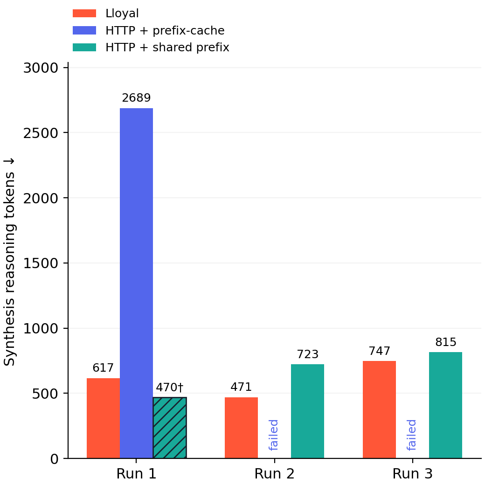
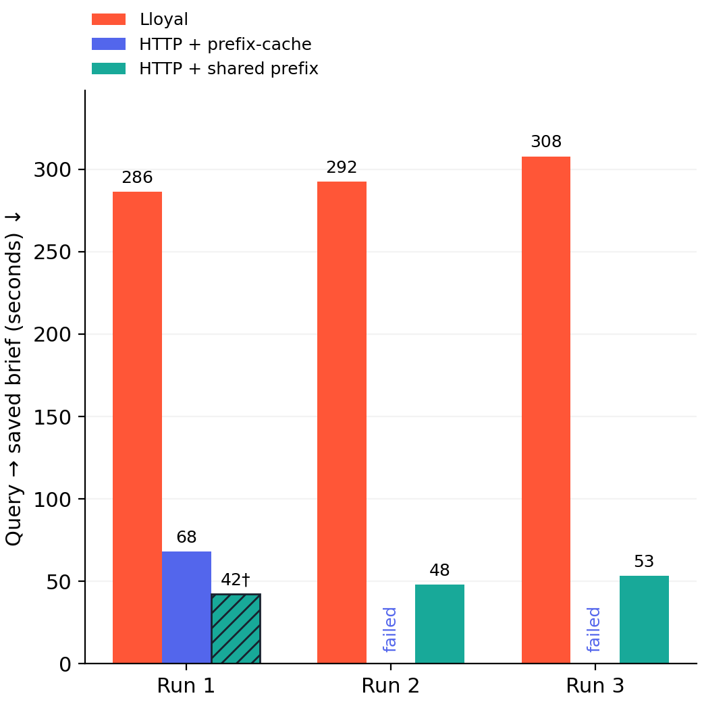

The original large reasoning gap does not persist against this shared-prefix HTTP variant: resident synthesis emitted 617 / 471 / 747 reasoning tokens, shared-prefix HTTP 470 / 723 / 815. The 470-token output was only a tool-call block, so it is not an equivalent-quality success.
Ordinary HTTP completed one brief with 2,689 reasoning tokens and exhausted its 32,768-position context in the other two attempts. The failed 29,061- and 28,857-token reasoning streams are retained, but excluded from successful-output reduction claims.
Lloyal produced three substantive initial reports; ordinary HTTP one; shared-prefix HTTP two. Lloyal scored 16 / 12 / 15 of 18 on the frozen rubric, compared with shared-prefix 0 / 8 / 12 and ordinary HTTP 13 for its completed brief. This implementing-assistant review found errors in every substantive report; it does not establish quality equivalence.
All shared-prefix syntheses recorded 1,788 actual prefix-cache tokens. Both HTTP arms had prefix-cache enabled throughout. Synthesis instruction text was identical, but shared-prefix HTTP placed it in a user message and retained tool schemas. This is a practical input-construction intervention, not a pure prefix-cache on/off ablation.
The first native planner changed inquiry order, affecting seed-to-objective assignment. Native and HTTP main-model KV formats both were q4_0; reranker KV formats were q8_0 versus f16, and batching differed. Generated evidence, full prompt ancestry and sampler-state continuity were not held identical. Causal attribution requires additional experiments.
Three arms on one NVIDIA L40S: Lloyal resident context, the existing LangGraph HTTP host with prefix-cache enabled, and the same host with a deliberately shared system/tool prefix. All run the Fieldnote UI journey, fresh preflight, four reviewed inquiries, PDF/image tools, Markdown corpus and reranker, synthesis, saved brief and follow-up.
Bars show completed full journeys; every planned attempt, including failures, remains in the table. Matched explicit sampling and pinned weights. Three repetitions of one synthetic task are exploratory. Different generated findings and prompt layouts prevent a causal claim about retained state. The shared-prefix arm changes instruction placement and keeps tool schemas with tool_choice=none. Reasoning text does not measure all internal computation.


| Run | Reasoning tokens | Answer tokens | Words | Synthesis s | Full brief s | Synthesis prefix-cache / input | Acceptance checks |
|---|---|---|---|---|---|---|---|
| 01-resident-r1 | 617 | 1587 | 901 | 26.1 | 286.3 | — | completed |
| 02-shared-prefix-r1 | 470 | 26 | 7 | 3.8 | 42.2 | 1,788 / 5,434 | UI completed; tool-call-only output |
| 03-http-r1 | 2689 | 800 | 482 | 22.7 | 67.9 | 0 / 3,783 | completed |
| 04-shared-prefix-r2 | 723 | 1090 | 756 | 12.9 | 48.0 | 1,788 / 5,689 | completed |
| 05-http-r2 | 29061 | — | — | — | — | 0 / 3,707 | failed — no completed full journey |
| 06-resident-r2 | 471 | 1391 | 841 | 22.5 | 292.4 | — | completed |
| 07-http-r3 | 28857 | — | — | — | — | 0 / 3,911 | failed — no completed full journey |
| 08-resident-r3 | 747 | 1084 | 727 | 21.9 | 307.9 | — | completed |
| 09-shared-prefix-r3 | 815 | 1341 | 823 | 13.9 | 53.3 | 1,788 / 5,871 | completed |
† Hatched bar: UI completed but the saved initial output was only a tool-call block. It is not a successful report. Native runs use LLOYAL_DEV=1 with tracing. Elapsed time includes orchestration, tools, reranking, UI review and instrumentation; it is not an isolated GPU decoding measurement. Both model stacks ran sequentially.
Anonymous answer packets scored before the token comparison was opened. The reviewer is the implementing assistant; this is not an independent review. Scores measure this fixture’s rubric coverage, not established quality equivalence.
| Run | Rubric | Assessment |
|---|---|---|
| 01-resident-r1 | 16/18 | Broadly complete report with a material contradiction about grant coverage. |
| 02-shared-prefix-r1 | 0/18 | Invalid initial brief: a literal tool-call block, with no report. The later follow-up is substantive but cannot repair the initial score. |
| 03-http-r1 | 13/18 | Concise and mostly correct selection rationale; grant omitted, routing only partial, and one ledger claim contradicted the source. |
| 04-shared-prefix-r2 | 8/18 | Omitted the financial package and visual explanation; also introduced arithmetic and maintenance errors. |
| 06-resident-r2 | 12/18 | Correct key selection facts, but omitted the visual explanation and added unsupported operational claims. |
| 08-resident-r3 | 15/18 | Complete coverage, but includes a false energy-efficiency claim and invents a link to the lighting distractor. |
| 09-shared-prefix-r3 | 12/18 | Financial facts mostly present, but the maintenance comparison is reversed and the visual explanation is absent. |
Anonymous scores and quoted evidence · Mapping to runs
Control receipts · Raw-log-derived measurements · Frozen protocol and run order · Quality rubric